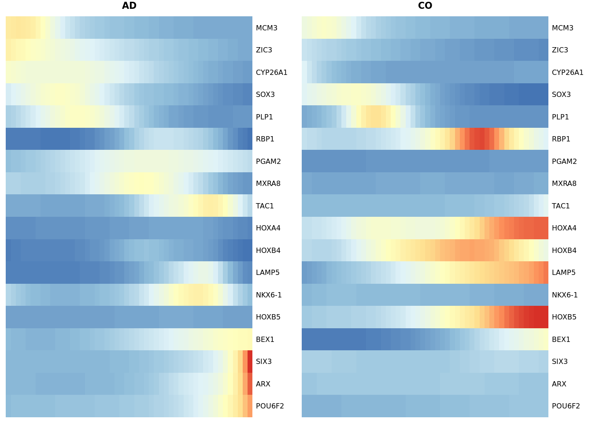

AD_CO_integrated_analysis
petrsh
2022-01-10
Last updated: 2022-01-12
Checks: 6 1
Knit directory: AD_CO_scRNAseq/
This reproducible R Markdown analysis was created with workflowr (version 1.6.2). The Checks tab describes the reproducibility checks that were applied when the results were created. The Past versions tab lists the development history.
The R Markdown is untracked by Git. To know which version of the R Markdown file created these results, you’ll want to first commit it to the Git repo. If you’re still working on the analysis, you can ignore this warning. When you’re finished, you can run wflow_publish to commit the R Markdown file and build the HTML.
Great job! The global environment was empty. Objects defined in the global environment can affect the analysis in your R Markdown file in unknown ways. For reproduciblity it’s best to always run the code in an empty environment.
The command set.seed(20220110) was run prior to running the code in the R Markdown file. Setting a seed ensures that any results that rely on randomness, e.g. subsampling or permutations, are reproducible.
Great job! Recording the operating system, R version, and package versions is critical for reproducibility.
Nice! There were no cached chunks for this analysis, so you can be confident that you successfully produced the results during this run.
Great job! Using relative paths to the files within your workflowr project makes it easier to run your code on other machines.
Great! You are using Git for version control. Tracking code development and connecting the code version to the results is critical for reproducibility.
The results in this page were generated with repository version 2f76cfb. See the Past versions tab to see a history of the changes made to the R Markdown and HTML files.
Note that you need to be careful to ensure that all relevant files for the analysis have been committed to Git prior to generating the results (you can use wflow_publish or wflow_git_commit). workflowr only checks the R Markdown file, but you know if there are other scripts or data files that it depends on. Below is the status of the Git repository when the results were generated:
Ignored files:
Ignored: analysis/figure/
Untracked files:
Untracked: analysis/AD_CO_integrated_analysis.Rmd
Untracked: analysis/AD_analysis.Rmd
Untracked: analysis/CO_analysis.Rmd
Untracked: data/AD/
Untracked: data/AD_CO_aggregated/
Untracked: data/CO/
Untracked: data/Kanton_2019/
Untracked: data/selection_dyn_genes.txt
Untracked: output/AD_clusters_res08.csv
Untracked: output/AD_filtered_barcodes.csv
Untracked: output/AD_sub_neuro_barcodes.csv
Untracked: output/AD_sub_neuro_res08.csv
Untracked: output/CO_clusters_res08.csv
Untracked: output/CO_filtered_barcodes.csv
Untracked: output/CO_sub_neuro.csv
Untracked: output/CO_sub_neuro_res08.csv
Untracked: output/COvsAD_DE_dyn_genes.csv
Untracked: output/cond_spec_markers_cl0.csv
Untracked: output/cond_spec_markers_cl1.csv
Untracked: output/cond_spec_markers_cl2.csv
Untracked: output/cond_spec_markers_cl3.csv
Untracked: output/cond_spec_markers_cl4.csv
Note that any generated files, e.g. HTML, png, CSS, etc., are not included in this status report because it is ok for generated content to have uncommitted changes.
There are no past versions. Publish this analysis with wflow_publish() to start tracking its development.
Dependencies
library(Seurat)
library(SingleR)
library(BiocParallel)
library(simspec)
library(scProportionTest)
library(dplyr)
library(slingshot)
library(tradeSeq)
library(pheatmap)
library(ggplot2)
library(ggthemes)
library(here)
# not loaded but required:
#library(gridExtra)We used ‘cellranger aggr’ to aggregate datasets into a single feature-barcode matrix and subsample reads such that the datasets have the same effective sequencing depth.
D1D2_merged <- Read10X(here("data","AD_CO_aggregated"))
Sat_D1D2_merged <- CreateSeuratObject(D1D2_merged, min.cells = 3)
Sat_D1D2_merged <- PercentageFeatureSet(Sat_D1D2_merged, pattern = "^MT-", col.name = "percent.mt")
Sat_D1D2_merged <- PercentageFeatureSet(Sat_D1D2_merged, pattern = "^RP[SL][[:digit:]]|^RPLP[[:digit:]]|^RPSA", col.name = "percent.ribo")
Sat_D1D2_merged$dataset <- sub(".*-","D", colnames(Sat_D1D2_merged))
AD_filtered_barcodes <- read.csv(here("output", "AD_filtered_barcodes.csv")) %>%
pull(x)
CO_filtered_barcodes <- read.csv(here("output", "CO_filtered_barcodes.csv")) %>%
pull(x)
Sat_D1D2_merged <- subset(Sat_D1D2_merged, cells = c(CO_filtered_barcodes, AD_filtered_barcodes))Subset cells in the datasets such that the datasets contain same number of cells.
Sat_D1D2_merged_D1 <- subset(Sat_D1D2_merged, dataset == "D1")
Sat_D1D2_merged_D2 <- subset(Sat_D1D2_merged, dataset == "D2")
set.seed(42)
Sat_D1D2_merged_D2 <- subset(Sat_D1D2_merged_D2, cells = sample(Cells(Sat_D1D2_merged_D2), length(Cells(Sat_D1D2_merged_D1))))
Sat_D1D2_merged <- subset(Sat_D1D2_merged, cells = c(Cells(Sat_D1D2_merged_D1),Cells(Sat_D1D2_merged_D2)))
# Use regularized negative binomial regression to normalize counts
Sat_D1D2_merged <- SCTransform(Sat_D1D2_merged, verbose = FALSE)
# Assign cell-cycle score
Sat_D1D2_merged <- CellCycleScoring(Sat_D1D2_merged, s.features = cc.genes.updated.2019$s.genes, g2m.features = cc.genes.updated.2019$g2m.genes,
set.ident = TRUE)
# Regress out the difference between the G2M and S phase scores
Sat_D1D2_merged$cc_difference <- Sat_D1D2_merged$S.Score - Sat_D1D2_merged$G2M.Score
Sat_D1D2_merged <- SCTransform(Sat_D1D2_merged, assay = 'RNA', new.assay.name = 'SCT', vars.to.regress = "cc_difference", verbose = FALSE)
Sat_D1D2_merged <- RunPCA(Sat_D1D2_merged, features = VariableFeatures(Sat_D1D2_merged))
Sat_D1D2_merged <- RunUMAP(Sat_D1D2_merged, dims = 1:15)
DimPlot(Sat_D1D2_merged, group.by = "Phase") +
DimPlot(Sat_D1D2_merged, group.by = "dataset")## Add AD and CO cluster labels
AD_clusters <- read.csv(here("output", "AD_clusters_res08.csv")) %>%
pull(x, X)
names(AD_clusters) <- sub("-1", "-2", names(AD_clusters))
AD_clusters <- AD_clusters[names(AD_clusters) %in% AD_filtered_barcodes]
CO_clusters <- read.csv(here("output", "CO_clusters_res08.csv")) %>%
pull(x, X)
Sat_D1D2_merged$CO_clusters <- CO_clusters
Sat_D1D2_merged$AD_clusters <- AD_clustersUMAP embedding of the data without any integration method revealed segregation of cells based on datasets. We decided to apply the cluster similarity spectrum (CSS) method that achieves integration by representing each cell by its transcriptome’s similarity to every cell cluster in each sample.
Sat_D1D2_merged_batch_cor <- cluster_sim_spectrum(object = Sat_D1D2_merged, label_tag = "dataset",
cluster_resolution = 0.8, verbose=FALSE)
Sat_D1D2_merged_batch_cor <- RunUMAP(Sat_D1D2_merged_batch_cor, reduction = "css", dims = 1:ncol(Embeddings(Sat_D1D2_merged_batch_cor, "css")))
Sat_D1D2_merged_batch_cor <- FindNeighbors(Sat_D1D2_merged_batch_cor, reduction = "css", dims = 1:ncol(Embeddings(Sat_D1D2_merged_batch_cor, "css")))
Sat_D1D2_merged_batch_cor <- FindClusters(Sat_D1D2_merged_batch_cor, resolution = c(0.1, 0.4, 0.8), verbose = FALSE)
DimPlot(Sat_D1D2_merged_batch_cor, group.by = "SCT_snn_res.0.8", label = T) +
DimPlot(Sat_D1D2_merged_batch_cor, group.by = "SCT_snn_res.0.4", label = T) +
DimPlot(Sat_D1D2_merged_batch_cor, group.by = "SCT_snn_res.0.1", label = T) +
DimPlot(Sat_D1D2_merged_batch_cor, group.by = "dataset", label = T) autumn_palette <- c("#751A33", "#B34233", "#D28F33", "#D4B95E", "#4EA2A2", "#506432",
"#1A8693", "#cbdfbd", "#d4e09b", "#f6f4d2", "#f19c79", "#a44a3f")
DimPlot(Sat_D1D2_merged_batch_cor, group.by = "SCT_snn_res.0.4", label = F, cols = autumn_palette) +
theme_tufte() +
theme(axis.ticks = element_blank())We can better visualize differences between AD and CO by computing the imbalance score for each cell based on the condition label distribution of its neighbors compared to the overall distribution.
imb_scores <- condiments::imbalance_score(Object = Sat_D1D2_merged_batch_cor@reductions$umap@cell.embeddings,
conditions = Sat_D1D2_merged_batch_cor$dataset)
df_imb <- as.data.frame(Sat_D1D2_merged_batch_cor@reductions$umap@cell.embeddings)
df_imb$scaled_imb <- imb_scores$scaled_scores
ggplot(df_imb, aes(x = UMAP_1, y = UMAP_2, col = scaled_imb)) +
geom_point() +
scale_color_viridis_c(option = "C") +
labs(col = "Imbalance score") +
ggthemes::theme_tufte(ticks = F) +
theme(axis.title.x=element_blank(),
axis.text.x=element_blank(),
axis.title.y=element_blank(),
axis.text.y=element_blank())We test the difference between the proportion of cells in clusters between AD and CO.
test_scProportionTest <- sc_utils(Sat_D1D2_merged_batch_cor)
test_scProportionTest <- permutation_test(test_scProportionTest,
cluster_identity = "SCT_snn_res.0.4",
sample_1 = "D1",
sample_2 = "D2",
sample_identity = "dataset")
permutation_plot(test_scProportionTest)Identification of specific genes for AD/CO
cond_spec_markers <- list()
for (i in levels(Sat_D1D2_merged_batch_cor$SCT_snn_res.0.1)) {
tmp <- subset(Sat_D1D2_merged_batch_cor, SCT_snn_res.0.1 == i)
cond_spec_markers[[i]] <- SoupX::quickMarkers(tmp@assays$RNA@counts, tmp$dataset, N = 50)
}
for (i in names(cond_spec_markers)){
file_name <- paste("cond_spec_markers_cl", i, ".csv", sep = "")
write.csv(cond_spec_markers[[i]][,-c(1,5,7,8,9)],here("output", file_name),
row.names = TRUE, quote = FALSE)
}
SCE_D1D2_merged_batch_cor <- as.SingleCellExperiment(Sat_D1D2_merged_batch_cor)
scater::plotExpression(SCE_D1D2_merged_batch_cor, features = cond_spec_markers[["0"]] %>%
arrange(qval) %>%
pull(gene) %>%
head(),
x = "dataset")scater::plotExpression(SCE_D1D2_merged_batch_cor, features = cond_spec_markers[["1"]] %>%
arrange(qval) %>%
pull(gene) %>%
head(),
x = "dataset")scater::plotExpression(SCE_D1D2_merged_batch_cor, features = cond_spec_markers[["2"]] %>%
arrange(qval) %>%
pull(gene) %>%
head(),
x = "dataset")scater::plotExpression(SCE_D1D2_merged_batch_cor, features = cond_spec_markers[["3"]] %>%
arrange(qval) %>%
pull(gene) %>%
head(),
x = "dataset")scater::plotExpression(SCE_D1D2_merged_batch_cor, features = cond_spec_markers[["4"]] %>%
arrange(qval) %>%
pull(gene) %>%
head(),
x = "dataset")genes_to_plot <- c("RAX", "CRX", "VSX2", "SIX6")
for (i in genes_to_plot){
g <- Nebulosa::plot_density(Sat_D1D2_merged_batch_cor, features = i, reduction = "umap") +
theme_tufte() +
theme(legend.position="none", axis.ticks = element_blank())
print(g)
}
We compare our datasets with published data (Kanton et al, 2019) using the SingleR package.
orgFull_huma <- readRDS(here("data", "Kanton_2019", "timecourse_human_pseudocells_consensusGenome.rds"))
DimPlot(orgFull_huma, reduction = "spring", group.by = "stage_group") The cells in our datasets are from 2-month old organoids, therefore, we expect the most cells to be classified as “Organoid-2M” or younger
# Extract log-normalized counts and subset the matrix to genes detected in our dataset
orgFull_huma_logCounts <- orgFull_huma@assays$RNA@data[rownames(orgFull_huma@assays$RNA@data) %in% rownames(Sat_D1D2_merged_batch_cor@assays$RNA@counts),]
# Build a reference
orgFull_human_stage_ref <- trainSingleR(orgFull_huma_logCounts,
labels = orgFull_huma$stage_group,
BPPARAM = MulticoreParam(),
de.n = 300,
aggr.ref = TRUE)
# Classify cells in our dataset
D1D2_orgFull_human_stage_pred <- classifySingleR(Sat_D1D2_merged_batch_cor@assays$RNA@counts, orgFull_human_stage_ref, BPPARAM = MulticoreParam())
#table(D1D2_orgFull_human_stage_pred$pruned.labels)
Sat_D1D2_merged_batch_cor$orgFull_human_stage_pred <- as.factor(D1D2_orgFull_human_stage_pred$pruned.labels)
DimPlot(Sat_D1D2_merged_batch_cor, group.by = "orgFull_human_stage_pred", label=F)Sat_D1D2_merged_batch_cor_D1 <- subset(Sat_D1D2_merged_batch_cor, dataset == "D1")
Sat_D1D2_merged_batch_cor_D2 <- subset(Sat_D1D2_merged_batch_cor, dataset == "D2")
DimPlot(Sat_D1D2_merged_batch_cor_D1, group.by = "orgFull_human_stage_pred", split.by = "orgFull_human_stage_pred", label=F) &
theme_tufte() &
theme(axis.ticks = element_blank())
DimPlot(Sat_D1D2_merged_batch_cor_D2, group.by = "orgFull_human_stage_pred", split.by = "orgFull_human_stage_pred", label=F) &
theme_tufte() &
theme(axis.ticks = element_blank())Trajectory inference across conditions
DimPlot(Sat_D1D2_merged_batch_cor, label = F, group.by = "SCT_snn_res.0.1")clust <- subset(Sat_D1D2_merged_batch_cor, SCT_snn_res.0.1 %in% c(0,1))
# remove AD cluster 6 and CO cluster 8
clust <- subset(clust, AD_clusters %in% 6, invert=T)
clust <- subset(clust, CO_clusters %in% 8, invert=T)
#
clust$TTR_on <- clust@assays$RNA@counts["TTR",] > 2
clust <- subset(clust, TTR_on == FALSE)
rd <- clust@reductions$umap@cell.embeddings
clust <- as.character(clust$SCT_snn_res.0.1)
sds <- slingshot(rd, clust, start.clus="1",end.clus ="0", stretch=0, extend="n")
#SlingshotDataSet(sds)
#plot(rd[,1], rd[,2])
#lines(SlingshotDataSet(sds))
psts <- slingPseudotime(sds)
df_psts <- as.data.frame(rd)
df_psts$psts <- psts
ggplot(df_psts, aes(x = UMAP_1, y = UMAP_2, col = psts)) +
geom_point() +
ggthemes::theme_tufte(ticks = F) +
scale_color_viridis_c() +
labs(col="pseudotime")Sat_D1D2_merged_batch_cor_psts <- subset(Sat_D1D2_merged_batch_cor, cells = rownames(rd))
df_psts$condition <- Sat_D1D2_merged_batch_cor_psts$dataset
df_psts$condition[df_psts$condition == "D1"] <- "CO"
df_psts$condition[df_psts$condition == "D2"] <- "AD"
ggplot(df_psts, aes(x = psts, fill = condition)) +
geom_density(alpha = .5) +
scale_fill_brewer(type = "qual") +
theme(legend.position = "bottom") +
ggthemes::theme_tufte(ticks = F) +
labs(x="pseudotime")Trajectory inference across conditions: differential expression between conditions along pseudotime
For both datasets we will estimate a smooth average gene expression profile along pseudotime using a negative binomial generalized additive model (NB-GAM). Then we will identify genes differentially expressed between AD and CO within a trajectory.
counts_D1D2_merged <- as.matrix(Sat_D1D2_merged_batch_cor@assays$RNA@counts[VariableFeatures(Sat_D1D2_merged_batch_cor),rownames(df_psts)])
df_psts$condition <- as.factor(df_psts$condition)
# comp demanding, don't run again when generating the report
BPPARAM <- BiocParallel::bpparam()
BPPARAM$workers <- 30 # use n cores
#set.seed(42)
#aicK <- evaluateK(counts = counts_D1D2_merged, sds = sds, conditions = df_psts$condition,
# parallel = TRUE, BPPARAM = BPPARAM)
set.seed(42)
sceGAM <- fitGAM(counts = counts_D1D2_merged, sds = sds, conditions = df_psts$condition,
nknots = 7, parallel=TRUE, BPPARAM = BPPARAM, verbose = FALSE)
# Identify DE genes between AD and CO
cond_res <- conditionTest(sceGAM, l2fc = log2(2))
cond_res$padj <- p.adjust(cond_res$pvalue, "fdr")
sum(cond_res$padj <= 0.01, na.rm = TRUE)[1] 141# export
cond_res %>%
filter(padj <= 0.1) %>%
arrange(padj) %>%
write.csv(here("output","COvsAD_DE_dyn_genes.csv"))
condition_genes <- cond_res %>%
filter(padj <= 0.01) %>%
arrange(padj) %>%
rownames()
### based on mean smoother
yhat_smooth <- predictSmooth(sceGAM, gene = condition_genes, nPoints = 50, tidy = FALSE)
yhat_smooth_scaled <- t(scale(t(yhat_smooth)))
heat_smooth_CO <- pheatmap(yhat_smooth_scaled[,51:100],
cluster_cols = FALSE,
show_rownames = TRUE, show_colnames = FALSE, main = "CO", legend = FALSE,
silent = TRUE, fontsize = 6, treeheight_row=0, border_color = NA
)
matching_heatmap_AD <- pheatmap(yhat_smooth_scaled[heat_smooth_CO$tree_row$order, 1:50],
cluster_cols = FALSE, cluster_rows = FALSE,
show_rownames = TRUE, show_colnames = FALSE, main = "AD",
legend = FALSE, silent = TRUE, fontsize = 6, border_color = NA
)
#heat_smooth_CO$tree_row$labels[heat_smooth_CO$tree_row$order]Heatmaps of DE genes between AD and CO within a trajectory
gridExtra::grid.arrange(heat_smooth_CO[[4]], matching_heatmap_AD[[4]], ncol = 2)dyn_genes <- read.delim(here("data","selection_dyn_genes.txt"))
heat_smooth_CO <- pheatmap(yhat_smooth_scaled[dyn_genes$WT,51:100],
cluster_cols = FALSE, cluster_rows = FALSE,
show_rownames = TRUE, show_colnames = FALSE, main = "CO", legend = FALSE,
silent = TRUE, fontsize = 6, treeheight_row=0, border_color = NA
)
matching_heatmap_AD <- pheatmap(yhat_smooth_scaled[dyn_genes$WT, 1:50],
cluster_cols = FALSE, cluster_rows = FALSE,
show_rownames = TRUE, show_colnames = FALSE, main = "AD",
legend = FALSE, silent = TRUE, fontsize = 6, border_color = NA
)
gridExtra::grid.arrange(heat_smooth_CO[[4]], matching_heatmap_AD[[4]], ncol = 2)heat_smooth_AD <- pheatmap(yhat_smooth_scaled[dyn_genes$AD, 1:50],
cluster_cols = FALSE, cluster_rows = FALSE,
show_rownames = TRUE, show_colnames = FALSE, main = "AD",
legend = FALSE, silent = TRUE, fontsize = 6, border_color = NA
)
matching_heatmap_CO <- pheatmap(yhat_smooth_scaled[dyn_genes$AD,51:100],
cluster_cols = FALSE, cluster_rows = FALSE,
show_rownames = TRUE, show_colnames = FALSE, main = "CO", legend = FALSE,
silent = TRUE, fontsize = 6, treeheight_row=0, border_color = NA
)
gridExtra::grid.arrange(heat_smooth_AD[[4]], matching_heatmap_CO[[4]], ncol = 2)
genes_to_plot <- c("HES5", "HES4", "HES1", "NOTCH1")
Sat_D1D2_merged_batch_cor$dataset_SCT_snn_res.0.4 <- paste(Sat_D1D2_merged_batch_cor$SCT_snn_res.0.4, Sat_D1D2_merged_batch_cor$dataset, sep = "_")
DotPlot(Sat_D1D2_merged_batch_cor, features = genes_to_plot, group.by = "dataset_SCT_snn_res.0.4") +
scale_color_viridis_c() +
theme_tufte(ticks = F)
DotPlot(Sat_D1D2_merged_batch_cor, features = genes_to_plot, group.by = "dataset_SCT_snn_res.0.4") +
scale_color_viridis_c() +
theme_tufte(ticks = F) +
coord_flip() +
theme( axis.text.x = element_text(angle = 90),
legend.position="none")DotPlot(Sat_D1D2_merged_batch_cor, features = genes_to_plot, group.by = "dataset_SCT_snn_res.0.4") +
scale_color_viridis_c() +
theme_tufte(ticks = F) +
coord_flip() +
theme( axis.text.x = element_text(angle = 90),
legend.key.size = unit(0.2, 'cm'), #change legend key size
legend.key.height = unit(0.2, 'cm'), #change legend key height
legend.key.width = unit(0.2, 'cm'), #change legend key width
legend.title = element_text(size=8), #change legend title font size
legend.text = element_text(size=8))DotPlot(Sat_D1D2_merged_batch_cor, features = genes_to_plot, group.by = "dataset") +
scale_color_viridis_c() +
theme_tufte(ticks = F) +
coord_flip() +
theme(axis.text.x = element_text(angle = 90),
legend.position="none")DotPlot(Sat_D1D2_merged_batch_cor, features = genes_to_plot, group.by = "dataset") +
scale_color_viridis_c() +
theme_tufte(ticks = F) +
coord_flip() +
theme(axis.text.x = element_text(angle = 90),
legend.key.size = unit(0.2, 'cm'), #change legend key size
legend.key.height = unit(0.2, 'cm'), #change legend key height
legend.key.width = unit(0.2, 'cm'), #change legend key width
legend.title = element_text(size=8), #change legend title font size
legend.text = element_text(size=8))
sessionInfo()R version 4.1.1 (2021-08-10)
Platform: x86_64-pc-linux-gnu (64-bit)
Running under: Ubuntu 20.04.3 LTS
Matrix products: default
BLAS: /usr/lib/x86_64-linux-gnu/blas/libblas.so.3.9.0
LAPACK: /usr/lib/x86_64-linux-gnu/lapack/liblapack.so.3.9.0
locale:
[1] LC_CTYPE=en_US.UTF-8 LC_NUMERIC=C
[3] LC_TIME=en_US.UTF-8 LC_COLLATE=en_US.UTF-8
[5] LC_MONETARY=en_US.UTF-8 LC_MESSAGES=en_US.UTF-8
[7] LC_PAPER=en_US.UTF-8 LC_NAME=C
[9] LC_ADDRESS=C LC_TELEPHONE=C
[11] LC_MEASUREMENT=en_US.UTF-8 LC_IDENTIFICATION=C
attached base packages:
[1] parallel stats4 stats graphics grDevices utils datasets
[8] methods base
other attached packages:
[1] presto_1.0.0 data.table_1.14.0
[3] Rcpp_1.0.6 here_1.0.1
[5] ggthemes_4.2.4 ggplot2_3.3.5
[7] pheatmap_1.0.12 tradeSeq_1.6.0
[9] slingshot_2.0.0 TrajectoryUtils_1.0.0
[11] SingleCellExperiment_1.14.1 princurve_2.1.6
[13] dplyr_1.0.7 scProportionTest_0.0.0.9000
[15] simspec_0.0.0.9000 BiocParallel_1.26.1
[17] SingleR_1.6.1 SummarizedExperiment_1.22.0
[19] Biobase_2.52.0 GenomicRanges_1.44.0
[21] GenomeInfoDb_1.28.1 IRanges_2.26.0
[23] S4Vectors_0.30.0 BiocGenerics_0.38.0
[25] MatrixGenerics_1.4.0 matrixStats_0.59.0
[27] SeuratObject_4.0.2 Seurat_4.0.3.9011
[29] workflowr_1.6.2
loaded via a namespace (and not attached):
[1] scattermore_0.7 ModelMetrics_1.2.2.2
[3] Ecume_0.9.1 tidyr_1.1.3
[5] knitr_1.33 irlba_2.3.3
[7] DelayedArray_0.18.0 rpart_4.1-15
[9] RCurl_1.98-1.3 generics_0.1.0
[11] ScaledMatrix_1.0.0 cowplot_1.1.1
[13] RANN_2.6.1 VGAM_1.1-5
[15] combinat_0.0-8 proxy_0.4-26
[17] future_1.21.0 spatstat.data_2.1-0
[19] lubridate_1.7.10 httpuv_1.6.1
[21] assertthat_0.2.1 viridis_0.6.1
[23] gower_0.2.2 xfun_0.24
[25] jquerylib_0.1.4 evaluate_0.14
[27] promises_1.2.0.1 fansi_0.5.0
[29] igraph_1.2.6 DBI_1.1.1
[31] htmlwidgets_1.5.3 sparsesvd_0.2
[33] spatstat.geom_2.2-2 purrr_0.3.4
[35] ellipsis_0.3.2 ks_1.13.2
[37] RSpectra_0.16-0 DDRTree_0.1.5
[39] deldir_0.2-10 sparseMatrixStats_1.4.0
[41] vctrs_0.3.8 ROCR_1.0-11
[43] abind_1.4-5 caret_6.0-88
[45] withr_2.4.2 sctransform_0.3.2
[47] mclust_5.4.7 goftest_1.2-2
[49] cluster_2.1.2 lazyeval_0.2.2
[51] crayon_1.4.1 edgeR_3.34.0
[53] recipes_0.1.16 pkgconfig_2.0.3
[55] slam_0.1-48 labeling_0.4.2
[57] vipor_0.4.5 nlme_3.1-153
[59] transport_0.12-2 nnet_7.3-16
[61] rlang_0.4.11 globals_0.14.0
[63] lifecycle_1.0.0 miniUI_0.1.1.1
[65] rsvd_1.0.5 rprojroot_2.0.2
[67] polyclip_1.10-0 lmtest_0.9-38
[69] Nebulosa_1.2.0 Matrix_1.4-0
[71] zoo_1.8-9 beeswarm_0.4.0
[73] ggridges_0.5.3 png_0.1-7
[75] viridisLite_0.4.0 bitops_1.0-7
[77] KernSmooth_2.23-20 pROC_1.17.0.1
[79] DelayedMatrixStats_1.14.0 stringr_1.4.0
[81] parallelly_1.26.1 beachmat_2.8.0
[83] scales_1.1.1 magrittr_2.0.1
[85] plyr_1.8.6 ica_1.0-2
[87] zlibbioc_1.38.0 compiler_4.1.1
[89] HSMMSingleCell_1.12.0 RColorBrewer_1.1-2
[91] fitdistrplus_1.1-5 XVector_0.32.0
[93] listenv_0.8.0 patchwork_1.1.1
[95] pbapply_1.4-3 MASS_7.3-54
[97] mgcv_1.8-38 tidyselect_1.1.1
[99] stringi_1.6.2 forcats_0.5.1
[101] highr_0.9 densityClust_0.3
[103] yaml_2.2.1 BiocSingular_1.8.1
[105] locfit_1.5-9.4 ggrepel_0.9.1
[107] grid_4.1.1 sass_0.4.0
[109] spatstat.linnet_2.3-0 tools_4.1.1
[111] future.apply_1.7.0 monocle_2.20.0
[113] foreach_1.5.1 git2r_0.28.0
[115] condiments_1.0.0 gridExtra_2.3
[117] prodlim_2019.11.13 farver_2.1.0
[119] Rtsne_0.15 digest_0.6.27
[121] pracma_2.3.3 FNN_1.1.3
[123] shiny_1.6.0 lava_1.6.9
[125] qlcMatrix_0.9.7 scuttle_1.2.0
[127] later_1.2.0 RcppAnnoy_0.0.18
[129] httr_1.4.2 kernlab_0.9-29
[131] SoupX_1.5.2 colorspace_2.0-2
[133] fs_1.5.0 tensor_1.5
[135] reticulate_1.20 splines_4.1.1
[137] uwot_0.1.10 spatstat.utils_2.2-0
[139] scater_1.20.1 plotly_4.9.4.1
[141] xtable_1.8-4 jsonlite_1.7.2
[143] spatstat_2.2-0 timeDate_3043.102
[145] ipred_0.9-11 R6_2.5.0
[147] pillar_1.6.1 htmltools_0.5.1.1
[149] mime_0.11 glue_1.4.2
[151] fastmap_1.1.0 BiocNeighbors_1.10.0
[153] class_7.3-19 codetools_0.2-18
[155] mvtnorm_1.1-2 utf8_1.2.1
[157] lattice_0.20-45 bslib_0.2.5.1
[159] spatstat.sparse_2.0-0 tibble_3.1.2
[161] ggbeeswarm_0.6.0 leiden_0.3.8
[163] survival_3.2-13 limma_3.48.1
[165] rmarkdown_2.9 docopt_0.7.1
[167] fastICA_1.2-2 munsell_0.5.0
[169] e1071_1.7-7 GenomeInfoDbData_1.2.6
[171] iterators_1.0.13 reshape2_1.4.4
[173] gtable_0.3.0 spatstat.core_2.3-0